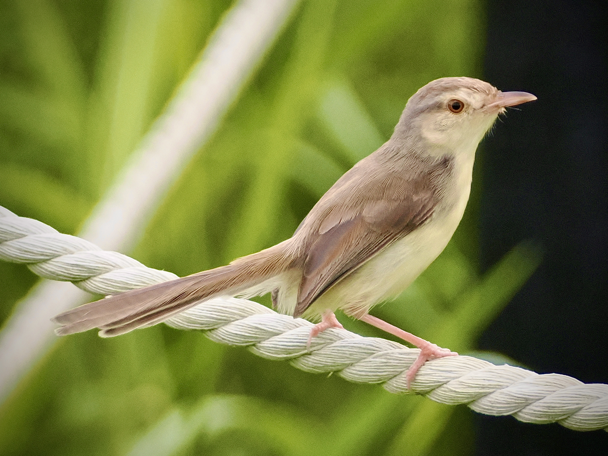
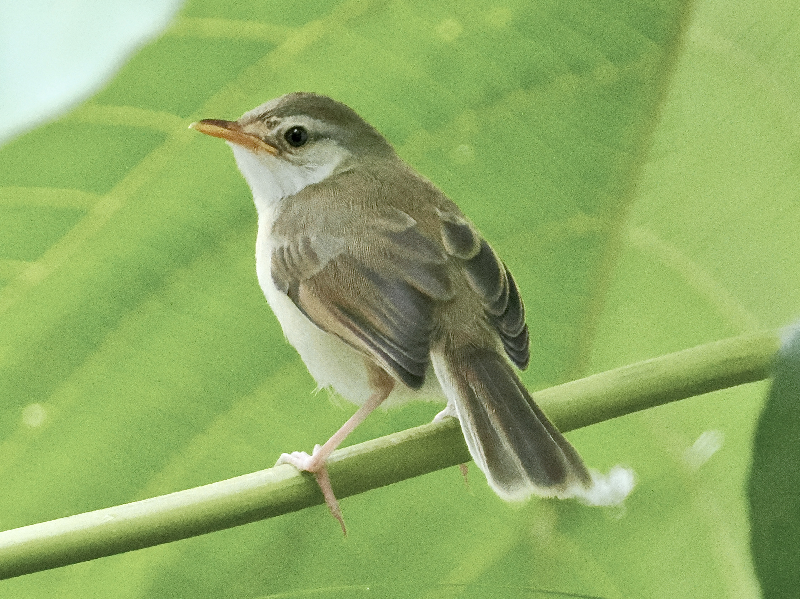

Plain Prinia
Prinia inornata
Order: Passeriformes
Family: Cisticolidae

An LBJ with a long tail. Has light brown irises. Often seen fluttering just above the grasses.

Juvenile has a visible gape and arguably darker eyes.
Similar species
Yellow-bellied Prinia- Head and back are the same colour (vs grey head and brown back)